Many people invest in the stock market to grow their assets.
Each investor analyzes company value and information, looks for targets and buys securities based on a rational judgment.
But however promising a security may be, a higher expected return always comes with higher risk.
Conversely, the more you reduce the risk, the lower the expected return becomes.
Are these really the only two options?
Invest in stocks and take on a large risk for a chance at a big return,
or invest in safe assets such as bonds and gold to cut the risk, and earn only a small return close to a savings account.
What if you hold risky and safe assets half and half?
Would you get medium risk and medium return?
In 1952, Harry Markowitz published Modern Portfolio Theory (MPT) in his paper “Portfolio Selection”.
Modern Portfolio Theory proved that risk and return between risky and safe assets have a nonlinear relationship,
and showed it visually in a graph called the efficient frontier.
The goal of this page is to draw the efficient frontier of Modern Portfolio Theory yourself
and see the nonlinear relationship between the two objectives, return and risk.
First, to analyze securities listed on the market, we need to load the “Historical Stock Data” of each target.
In this example, the analysis is performed on the three securities below.
The daily closing prices **2 for about the last year **1 were loaded.
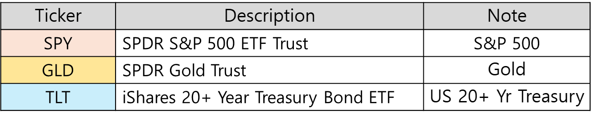
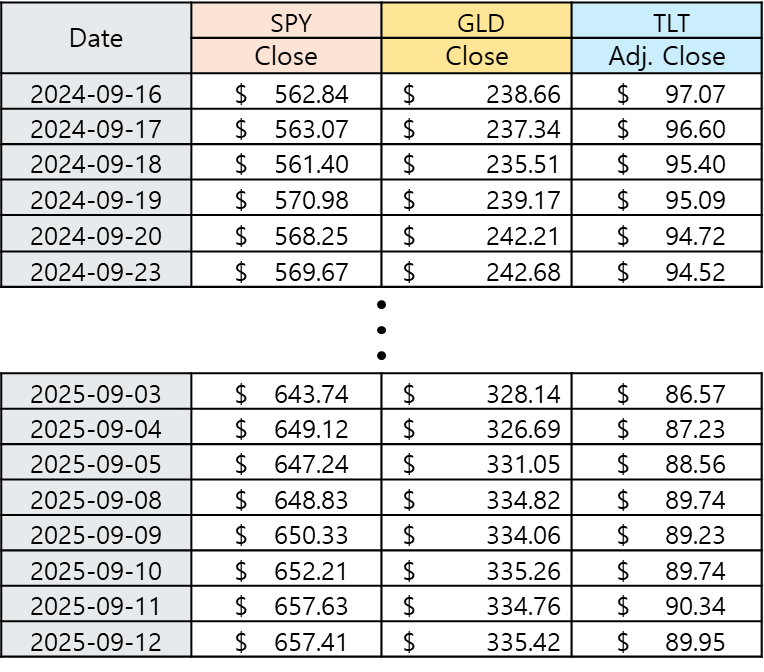
**1 ) 분석날짜 : 2024-09-16 ~ 2025-09-12
**2 ) 요즘 증권시장에서는 다양한 ETF가 출시되어 있으며 배당(분배금) 지급을 목적으로 하는 상품이 많습니다.
높은 배당을 지급하는 ETF의 경우 반드시 배당을 재투자함을 가정한 “수정종가(adjusted close)”를 이용하여 계산을 수행하여야 합니다.
Assuming each stock (ETF) was held for the past year, we calculate its daily mean expected return.
The expected return can be calculated as follows.
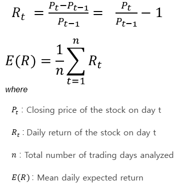
Written out more simply, it looks like this.
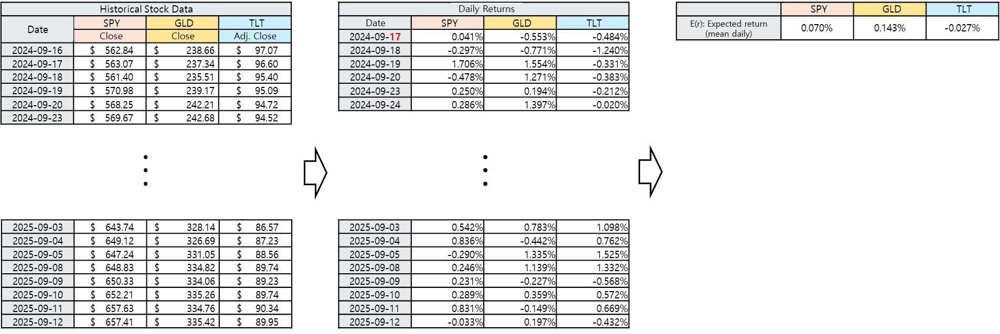
The daily mean expected return is so small that it is hard to get a feel for,
so it can be converted to an annual mean expected return with the formula below.
SPY : 0.070% / day -> 19.33% / year
GLD : 0.143% / day -> 43.50% / year
TLT : -0.027% / day -> -6.60% / year
**1 ) 개장일 : ±252일 (주말,공휴일 제외)
Assuming each stock (ETF) was held for the past year, we calculate the volatility (standard deviation) **1 of its daily returns.
The volatility (standard deviation) of daily returns can be calculated as follows.
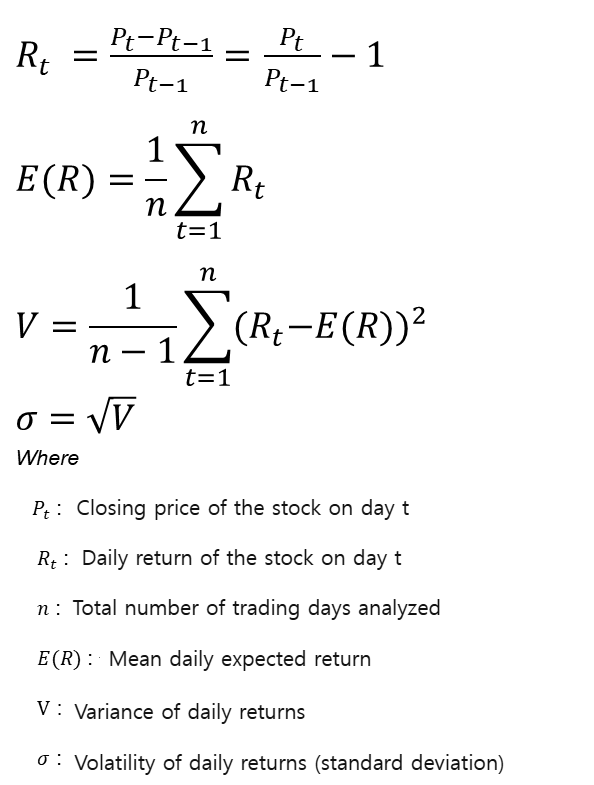
Written out more simply, it looks like this.
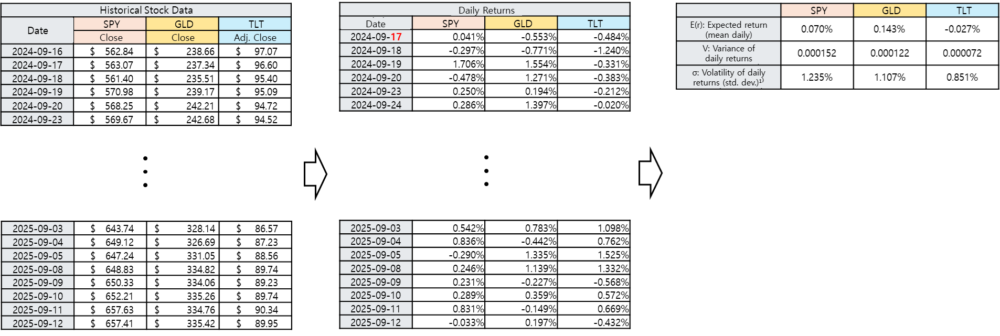
The daily price volatility is so small that it is hard to get a feel for,
so it can be converted to annual price volatility with the formula below.
SPY : 2.612 / day -> 19.60% / year
GLD : 2.318% / day -> 17.57% / year
TLT : 1.107% / day -> 13.50% / year
**1 ) 표준편차 : 측정된 각각의 데이터가 “평균”값으로부터 “평균적으로” 얼마나 떨어져 있는가(편차)를 설명하는 방법
Covariance is a way to measure the relationship between two data sets quantitatively.
The covariance formula given in “Portfolio Selection” is as follows.
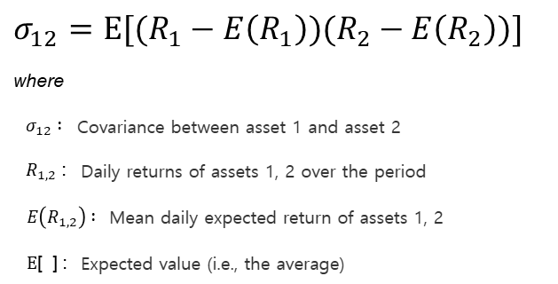
Written as the usual covariance formula, it becomes the following.
In this example the calculation is done for more than one security (SPY, GLD, TLT),
(and many securities will be handled later as well),
so it is written as a matrix operation as below. (For a simple calculation, only three days of closing prices are used.)
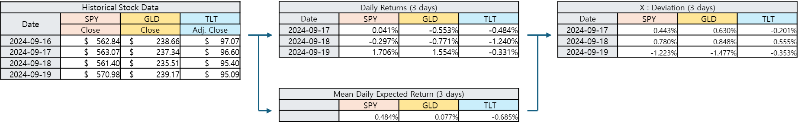
We calculate the covariance to check the relationship between two or more data sets.
But the covariance alone does not show intuitively how strongly they are related.
So the covariance is normalized to the range of -1 to 1.
This is like expressing the relationship as a percentage, such as 70% or 20%.
Let’s bring back the covariance result.
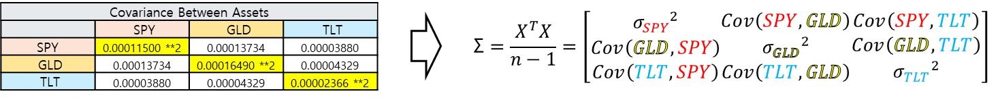
The covariance matrix is made up of the (co)variances between each pair of data sets.
The correlation coefficient is obtained as follows.
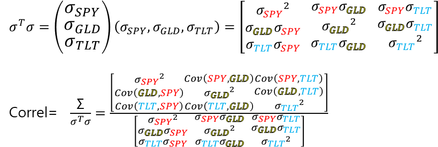
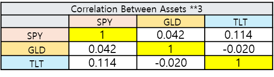
Between the same asset, the correlation coefficient is 1. e.g. SPY vs. SPY
Between different assets, the correlation coefficient was calculated as below. e.g. SPY vs. GLD
In the correlation calculation, the numerator is how much the two assets move together ((co)variance),
and it is divided by the product of their standard deviations.
As a result, the correlation coefficient is normalized between -1 and 1.
Closer to 1 means a positive correlation,
closer to -1 means a negative correlation,
and closer to 0 means no correlation at all.
From the correlation results, the correlation between the assets is judged to be low enough.
SPY vs. GLD : 0.042 : 4.2%
SPY vs. TLT : 0.114 : 11.4%
GLD vs. TLT : -0.02 : -2%
** ) 공분산 계산 시 모집단을 대상으로 측정하는 경우 n으로 나누지만 표본집단(예제에서는 1년치의 데이터)을 대상으로 계산할 경우 n-1을 적용합니다.
**1 ) 둘 이상의 데이터를 대상으로 공분산을 계산할 경우, 공분산 행렬의 기호는 "Σ"" 가 사용됩니다.
**2 ) 각 자산의 분산과 같습니다. (계산 검산에 유용합니다.)
**3 ) 이 상관계수 값은 현재 예제에서 구한 3일치 공분산으로 구한 것이 아니라, 지난 1년간의 종가를 이용하여 구했습니다. (단 3일치의 공분산으로 상관계수를 계산하는 경우 터무니없는 값이 나오므로)
The results of the analysis so far are as follows.
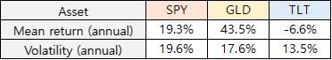
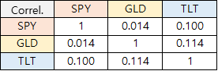
The correlation results show that these assets are only weakly related, so they are suitable for searching for the best allocation.
(With highly correlated assets, it is hard to find a way to spread the risk while maximizing the return.)
Holding only SPY, one of the risky assets, gives an expected return of 19.3% a year with a volatility of 19.6%.
Holding only TLT, one of the safe assets, gives a loss of -6.6% a year with a volatility of 13.5%.
Holding only GLD, one of the safe assets, gives an expected return of 43.5% a year with a volatility of 17.6%.
At first glance, simply holding only gold seems reasonable.
If these assets are held together, will the result be a medium expected return with medium volatility (risk)?
Let’s check by trying a huge number of cases.
Monte Carlo simulation is an inductive method: the inputs **1 of a problem are changed randomly again and again within the boundary conditions **2,
the resulting outcomes **3 are listed, and the inputs **1 that lead to the intended outcome **3 are estimated from them.
In short, it means trying countless random case studies.
In this problem, a total of 2000 random case studies were performed.
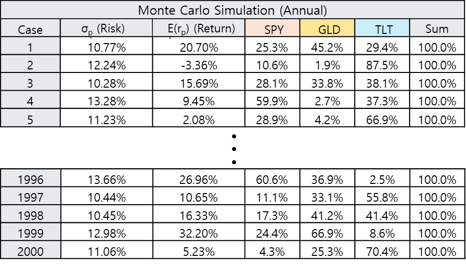
The result of the Monte Carlo simulation is shown in the graph below.
This graph is called the “Efficient Frontier”.
It shows a region that is more reasonable than holding any single asset alone. (green solid line)
This region is called the “Pareto Set”.
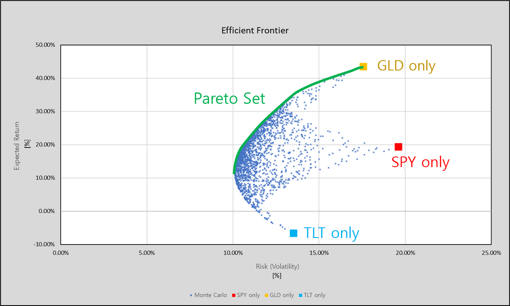
For example, holding SPY alone gives an expected return of about 20% with a volatility (risk) of about 20%.
But depending on the allocation, there is a region where the expected return stays at about 20% while the volatility (risk) drops to about 11%. (below)
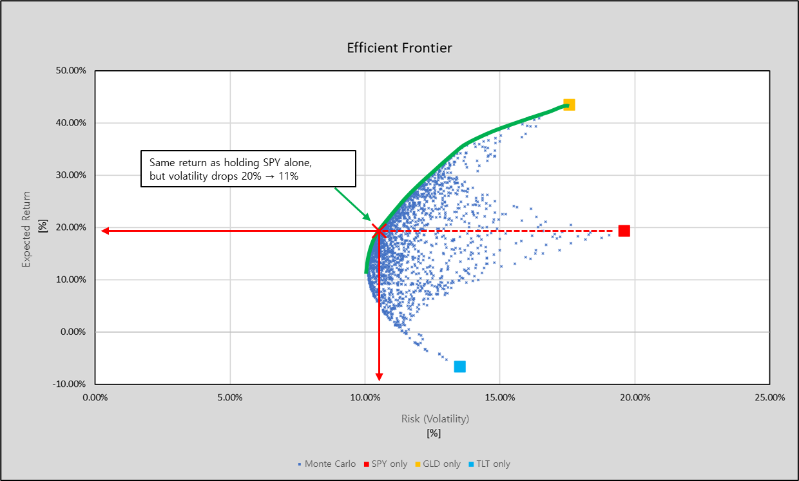
For example, holding TLT alone gives a volatility (risk) of about 13% and a return of -6.6%, which is already a loss.
But depending on the allocation, there is a region where the volatility (risk) stays at about 13% while the return rises to about 33%. (below)
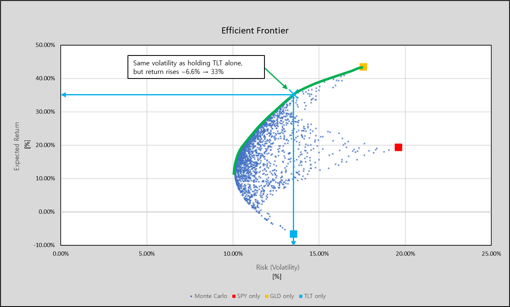
For example, holding GLD alone gives an expected return of about 43% with a volatility (risk) of about 19%.
GLD already lies on the Pareto set, so holding GLD alone is also reasonable.
But there are other choices (the Pareto set) that lower the risk while staying reasonable. (below)
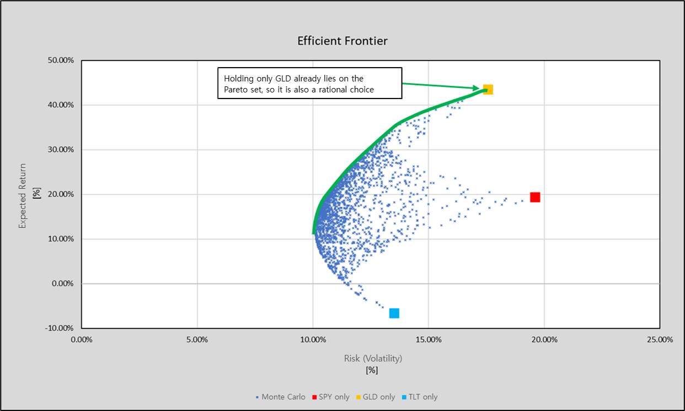
When investing in several securities, we learned that the allocation should give a result that lies on the Pareto set.
Then which point on the Pareto set (green solid line) should we choose?
(The Pareto set is the set of the best choices under the given conditions, so any of them can be chosen.)
(The Pareto set is continuous and has infinitely many choices, so a way to pick one reasonable choice is explained next.)
To choose a reasonable ratio, Markowitz proposed the E-V Rule:
maximize the expected return (E) and minimize the volatility (variance (V), standard deviation).
This is a multi-objective optimization problem that optimizes two objectives in a trade-off,
and the E-V Rule develops into the problem of maximizing the “Sharpe ratio”.
The Sharpe ratio can be obtained as follows.
The Sharpe ratio is the average annual return you can expect per unit of annual risk.
In other words, we need to find the allocation with the highest Sharpe ratio.
Before finding that ratio, we looked for the case with the highest Sharpe ratio
in the earlier Monte Carlo simulation (2000 random cases).
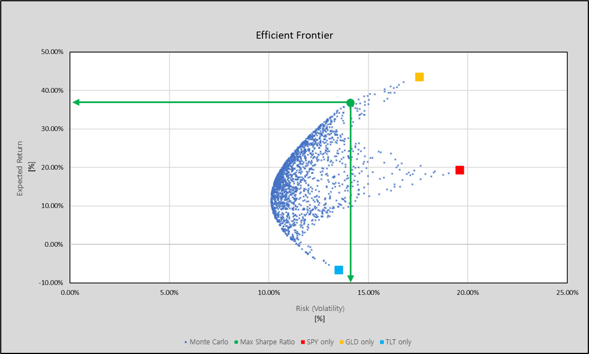
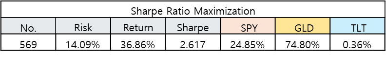
The highest Sharpe ratio (2.617) was found in case 569, and its return, risk and allocation are shown. (above)
The result shows that the Sharpe ratio is highest when TLT is practically not held and SPY : GLD = 25 : 75. **1
Choosing the case with the maximum Sharpe ratio from the Monte Carlo results is good enough.
But when there are many securities, or the Monte Carlo simulation has to be run every time, it can become a burden.
In that case, the maximum Sharpe ratio can be found by solving the optimization problem below.
First, the optimization formulation for the Pareto set is as follows.
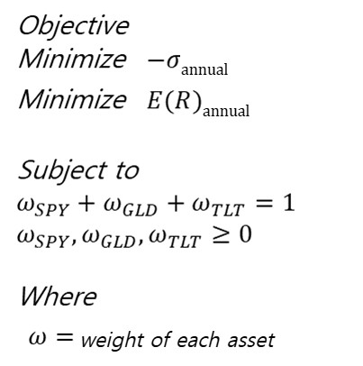
This is a multi-objective optimization problem with two or more objective functions.
There are countless ways to solve multi-objective optimization problems.
(Weighting Method, ε Constraint Method, STOM (Satisficing Trade-Off Method), etc.)
The formulation for finding the solution on the Pareto set that satisfies Markowitz’s E-V Rule (maximum Sharpe ratio) is as follows.
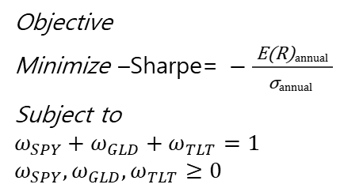
The optimization was run with a suitable optimization tool,
and the table below compares the solution chosen from the Monte Carlo simulation with the optimum.
The Sharpe ratios of the two methods differ by only 0.001, so either method can be used to find the allocation.
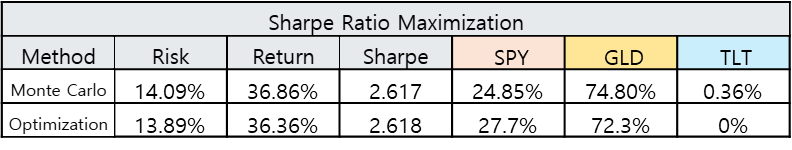
**1 ) 이 예제는 임의의 3가지 증권을 대상으로 단순히 지난 1년동안의 데이터로 분석한 결과입니다.
Depending on the allocation, there is a region that is more reasonable than holding any single asset alone. (green solid line)
This region is called the “Pareto Set”.
For example, holding SPY alone gives an expected return of about 20% with a volatility (risk) of about 20%.
But depending on the allocation, there is a region where the expected return stays at about 20% while the volatility (risk) drops to about 11%. (below)
For example, holding TLT alone gives a volatility (risk) of about 13% and a return of -6.6%, which is already a loss.
But depending on the allocation, there is a region where the volatility (risk) stays at about 13% while the return rises to about 33%. (below)
For example, holding GLD alone gives an expected return of about 43% with a volatility (risk) of about 19%.
GLD already lies on the Pareto set, so holding GLD alone is also reasonable.
But there are other choices (the Pareto set) that lower the risk while staying reasonable. (below)
When investing in several securities, we learned that the allocation should give a result that lies on the Pareto set.
To choose a reasonable ratio, Markowitz proposed the E-V Rule:
maximize the expected return (E) and minimize the volatility (variance (V), standard deviation). (Sharpe ratio maximization problem)
The Sharpe ratio is the average annual return you can expect per unit of annual risk.
In other words, we need to find the allocation with the highest Sharpe ratio.
In this example, the Sharpe ratio is highest when TLT is practically not held and SPY : GLD = 25 : 75. **1
The answer to the question at the top of this page, “Why hold stocks and bonds at 60:40?”,
is not literally that you should hold stocks and bonds at 60:40.
It means you should split your holdings between risky and safe assets, and at least choose an allocation that lies on the Pareto set,
or calculate and hold the allocation that maximizes the Sharpe ratio.
**1 ) 이 예제는 임의의 3가지 증권을 대상으로 단순히 지난 1년동안의 데이터로 분석한 결과입니다.